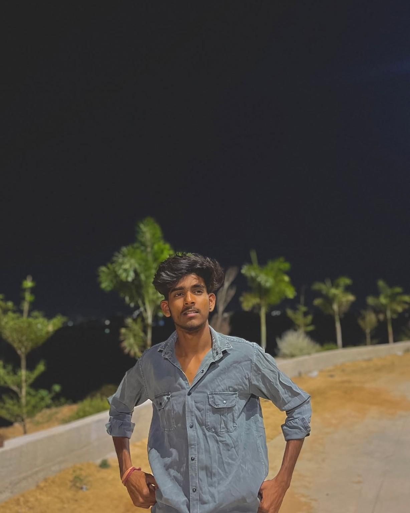
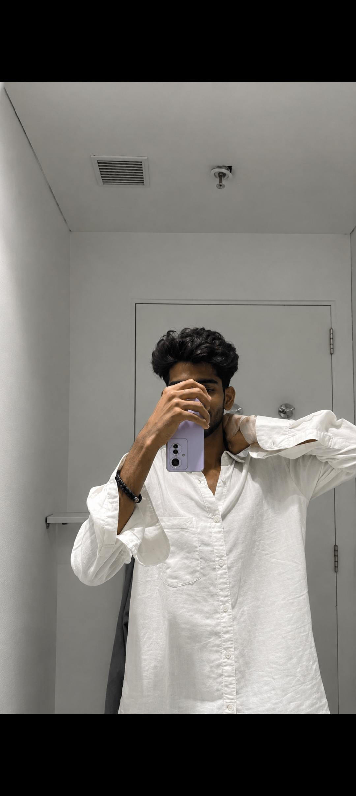

⌁
BGMI & Gaming
Gaming is where I enjoy the challenge, improve my skills and switch off from the noise.
PERSONAL PORTFOLIO · MY DIGITAL SPACE
MY WORLD. MY STORY. MY NEXT CHAPTER.
A curious mind with a love for gaming, riding, photography and building things for the web. This is a little universe made from the things that make me, me.
EXPLORE MY WORLD ↓01 — A LITTLE ABOUT ME
WHO I AMI’m Vamshi. I like exploring ideas, learning new things and creating something of my own. I’m interested in technology, visual creativity and the experiences that make life memorable.
This website is my digital space — a place to introduce myself, collect the things I love, share the projects I build and document the journey from where I am to where I want to be.
Small beginnings. Consistent effort. Bigger dreams.



YOUR OWN PHOTOS · REPLACE THE IMAGE FILES IN THE IMAGES FOLDER
02 — THE THINGS I LOVE
MY INTERESTSGaming is where I enjoy the challenge, improve my skills and switch off from the noise.
The feeling of a ride, the road ahead and the freedom to explore — that is my kind of escape.
I enjoy capturing moments, experimenting with frames and finding stories in everyday scenes.
I’m learning to turn ideas into useful, thoughtful websites — one project and one skill at a time.
YEARS OF A JOURNEY
03 — SOMEONE SPECIAL
Seven years of being part of each other’s lives is something I hold close to my heart. Thank you for understanding me, caring for me and showing your love through the efforts you make. The little things you do mean more than I can always put into words.
I still look forward to the simple dreams — going on a bike ride together, visiting beautiful temples, discovering new places and making memories along the way. I hope we both keep growing, achieving our dreams and building a happy future, one step at a time.
Always wishing the best for us. ♡
A PERSONAL NOTE · JUST FOR YOU04 — THE ROAD AHEAD
MY NEXT CHAPTEROne of my goals is to grow into a skilled web developer. I want to learn how the web works, build meaningful projects and create experiences that people enjoy using.
I know success takes patience, practice and consistency. I’m starting where I am, improving step by step and keeping the bigger vision in sight.
05 — A PROJECT IN PROGRESS
SOMETHING MEANINGFUL IS ON THE WAY
A project I’m working on with care. More details will be shared when it is ready.
06 — MOMENTS & MEMORIES
PERSONAL GALLERYUse your own photos in the images folder to make this space truly yours.